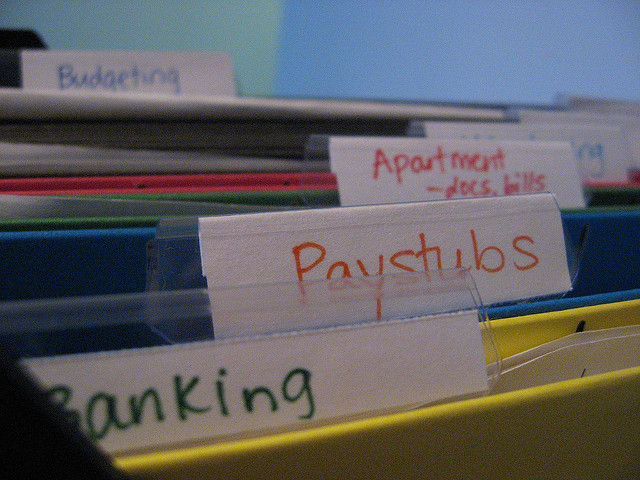

Úložisko¶
Niekdy potrebuješ uložiť užitočné informácie. Tieto informácie sú uložené ako dáta: reprezentácia informácie (v digitálnej forme, ak sú uložené v počítačoch). Ak uložíš dáta do počítača, mali by ostať zachované a to aj vtedy, ak zariadenie vypneš a znova zapneš.
Našťastie, MicroPython na micro:bite ti umožňuje urobiť to pomocou veľmi jednoduchého súborového systému. Keďže pamäť má výrazné obmedzenia, v súborovom systéme máš k dispozícii približne 30k úložného priestoru.
Čo je to súborový systém?
Je to spôsob, akým sa ukladajú a triedia dáta tak, aby pretrvali - všetky dáta uložené v súborovom systéme by mali prežiť reštart zariadenia. Ako naznačuje názov, dáta uložené v súborovom systéme sú ukladané v súboroch.
Počítačový súbor je pomenovaný digitálny zdroj údajov, ktorý je uložený v súborovom systéme. Takéto zdroje obsahujú užitočné informácie. Rovnako fungujú aj v papierovej forme. Je to vlastne pomenovaný zakladač, ktorý obsahuje užitočné informácie. Zvyčajne, papierové aj digitálne súbory majú svoje mená, aby sme ľahko vedeli určiť, čo obsahujú. Na počítačoch je bežné dávať súborom koncovku .nieco. Toto „nieco“ zvyčajne naznačuje, akým typom dát uchovávame informáciu. Napríklad .txt označuje textový súbor, .jpg obrázok vo formáte JPEG a .mp3 zvukové dáta zakódované vo formáte MP3.
Niektoré súborové systémy (napríklad ti, čo máte v notebooku či počítači) umožňujú organizovať súbory do adresárov: pomenovaných kontajnerov, ktoré uchovávajú príbuzné súbory a tiež podadresáre. Avšak, súborový systém MicroPythonu je plochý súborový systém. Plochý (flat) súborový systém nemá adresáre - všetky súbory sú uložené na jednom mieste.
Programovací jazyk Python obsahuje jednoduché, no výkonné nástroje na prácu so súborovým systémom na počítači. MicroPython na micro:bite implementuje užitočnú podmnožinu týchto nástrojov, aby bolo možné jednoducho čítať a zapisovať súbory na zariadenie, no stále zachovať kompatibilitu s inými verziami Pythonu.
Varovanie
Flashovanie micro:bitu ZNIČÍ VŠETKY DÁTA, keďže sa pri tom prepíše celá flash pamäť, ktorú zariadenie používa a súborový systém je uložený vo flash pamäti.
No ak vypneš zariadenie, dáta ostanú nedotknuté, až kým ich nezmažeš, alebo neflashneš zariadenie.
Sezam, otvor sa¶
Čítanie a zapisovanie súborov do súborového systéme urobíme pomocou funkcie open. Keď už máš súbor otvorený, môžeš s ním robiť rôzne veci, až kým ho nezatvoríš (rovnako ako pri papierovej forme). Je veľmi dôležité, aby si súbor zatvoril(a), aby MicroPython vedel, že si s ním už po skončil(a).
Toto najlepšie dosiahneme pomocou výrazu with, takto:
with open('story.txt') as my_file:
content = my_file.read()
print(content)
Výraz with použije funkciu open, aby s ňou otvoril súbor a priradil ho nejakému objektu. V príklade vyššie, funkcia open otvára súbor s názvom story.txt (podľa názvu zrejme textový súbor, ktorý obsahuje nejaký príbeh - story). Objekt, ktorý reprezentuje tento súbor v Pythone sa volá my_file. Následne, v bloku kódu odsadenom pod výrazom with sa používa objekt my_file na čítanie obsahu súboru a priradenie obsahu k objektu.
A teraz dôležitá poznámka: nasledujúci riadok, ktorý obsahuje výraz print, nie je odsadený. Blok kódu spojený s výrazom with je iba ten jeden riadok, ktorý načíta obsah súboru. Keď sa blok spojený s with skončí, potom Python (a aj MicroPython) automaticky zatvorí súbor. Toto sa nazýva spracovanie kontextu (context handling) a funkcia open vytvára objekty, ktoré sú context handlermi pre súbory.
Jednoducho povedané, rozsah tvojej interakcie so súborom definuje blok kódu spojený s výrazom with, ktorý otvára súbor.
Zmätený/á?
Nebuď. Tvoj kód má jednoducho vyzerať takto:
with open('some_file') as some_object:
# Do stuff with some_object in this block of code
# associated with the with statement.
# When the block is finished then MicroPython
# automatically closes the file for you.
Rovnako ako papierová zložka, digitálny súbor sa otvára z dvoch dôvodov: kvôli čítaniu jeho obsahu (ako sme si ukázali vyššie) alebo kvôli zápisu.Predvolený mód je čítanie súboru. Ak chceš do súboru zapisovať, musíš to funkcii open povedať takto:
with open('hello.txt', 'w') as my_file:
my_file.write("Hello, World!")
Všimni si argument 'w', ktorý použijeme, aby sme nastavili objekt my_file do zapisovacieho módu. Môžeš tam tiež nastaviť argument 'r', ak chceš nastaviť súbor do módu na čítanie, ale keďže to je predvolená hodnota, často sa vynecháva.
Zápis dát do súboru sa robí pomocou metódy write , ktorá ako argument potrebuje reťazec, ktorý chceš zapísať do súboru. V príklade vyššie zapisujem text „Hello, World!“ do súboru s názvom „hello.txt“.
Jednoduché!
Poznámka
Keď otvoríš súbor a zapíšeš doň (možno aj viackrát, kým je súbor otvorený), budeš stále prepisovať jeho obsah, ak už súbor existuje.
Ak chceš len pridať dáta do súboru, najskôr ho musíš prečítať, odložiť si niekam jeho obsah, zatvoriť, pridať dáta do obsahu, potom ho otvoriť a nakoniec zapísať upravený obsah.
Toto platí pre MicroPython, „normálny“ Python vie otvárať súbory aj v móde na dopĺňanie („append“). To, že na micro:bite to urobiť nevieme, je dôsledok jednduchej implementácie súborového systému.
OS SOS¶
Tak ako čítať a písať, Python vie so súbormi aj manipulovať. Určite niekedy potrebuješ vedieť, kde sa súbory nachádzajú a niekedy ich dokonca potrebuješ aj zmazať.
Na bežnom počítači je toto úlohou operačného systému (ako napríklad Windows, OSX alebo Linux), ktorý to urobia za Python. Takáto funkcionalita sa v Pythone zabezpečuje pomocou modulu, ktorý sa volá os. Keďže MicroPython je operačný systém, rozhodli sme sa pre konzistentnosť zachovať tieto funkcie v module os, takže nabudúce, keď budeš používať „normálny“ Python na zariadení ako notebook alebo Raspberry Pi, budeš vedieť, kde ich nájdeš.
Čo je dôležité, na súborovom systéme môžeš robiť tri operácie: zoznam súborov, odstrániť súbor a zistiť veľkosť súboru.
Na zobrazenie zoznamu súborov na tvojom súborovom systéme použi funkciu listdir. Jej návratovou hodnotou je zoznam reťazcov, ktoré predstavujú názvy súborov v súborovom systéme:
import os
my_files = os.listdir()
Súbor zmažeš pomocou funkcie remove. Tá ako argument potrebuje názov súboru, ktorý si želáš zmazať. Vyzerá to takto:
import os
os.remove('filename.txt')
A na záver, niekedy je užitočné vedieť, aký veľký je súbor predtým, ako z neho začneme čítať. Toto zistíme pomocou funkcie size. Rovnako ako funkcia remove, vezme reťazec predstavujúci názov súboru, ktorého veľkosť chceš vedieť. Vráti celé číslo (integer), ktoré hovorí, koľko bajtov súbor v pamäti zaberá:
import os
file_size = os.size('a_big_file.txt')
Je to fajn mať súborový systém, ale čo ak chceme dostať súbory do alebo zo zariadenia?
Na to použi pomocný program microfs!
Prenos súborov¶
Ak máš nainštalovaný Python na počítači, ktorý používať na programovanie micro:bitu, tak môžeš využiť špeciálny program, ktorý sa volá microfs (skrátene ufs ak používaš príkazový riadok). Kompletné inštrukcie na inštaláciu a používanie všetkých možností microfs sú k dispozícii v dokumentácii <https://microfs.readthedocs.io>`_.
No ale aj tak, na väčšinu vecí, ktoré budeš potrebovať, použiješ iba štyri jednoduché príkazy:
$ ufs ls
story.txt
Príkaz ls zobrazí zoznam súborov na súborovom systéme (volá sa rovnako ako Unixový príkaz, ktorý slúži na rovnaký účel).
$ ufs get story.txt
Príkaz get zoberie súbor z pripojeného micro:bitu a uloží ho do tvojho aktuálneho adresára na počítači (príkaz je pomenovaný rovnako ako príkaz get, ktorý je súčasťou protokolu na prenos súborov FTP a ktorý má rovnakú funkciu).
$ ufs rm story.txt
Príkaz rm odstraňuje označený súbor zo súborového systému na pripojenom micro:bite (je pomenovaný po štandardnom Unixovom príkaze, rm, ktorý slúži tiež na mazanie súborov).
$ ufs put story2.txt
Finally, the put sub-command puts a file from your computer onto the
connected device (it’s named after the put command that’s part of FTP that
serves the same function).
Hlavne main.py¶
Súborový systém má tiež zaujímavú vlastnosť: ak na zariadenie naflashuješ iba MicroPython, tak po zapnutí bude zariadenie čakať, čo má robiť. No ak nakopíruješ do súborového systému špeciálny súbor s názvom main.py (main = hlavný), potom po reštare zariadenia MicroPython spustí obsah tohto súboru.
Navyše, ak nakopíruješ ďalšie Pythonské súbory na súborový systém, potom ich môže import``ovať tak, ako hocijaký iný Pythonský modul. Napríklad, ak máš súbor ``hello.py, ktorý obsahuje tento jednoduchý kód:
def say_hello(name="World"):
return "Hello, {}!".format(name)
… môžeš ho naimportovať a takto použiť funkciu say_hello:
from microbit import display
from hello import say_hello
display.scroll(say_hello())
Samozrejme, výsledkom je text „Hello, World!“, ktorý sa posúva po displeji. Dôležitým bodom je, že tento príklad bol rozdelený do dvoch Pythonských modulov a použili sme výraz import na zdieľanie kódu.
Poznámka
Ak si okrem samotného MicroPythonu naflashoval na zariadenie aj ďalší skript, potom MicroPython odignoruje main.py a namiesto neho spustí tvoj vložený skript.
Ak chceš naflashovať iba samotný MicroPython, tak sa len uisti, že skript, ktorý si napísal(a) vo svojom editore má nula znakov. Po naflashovaní ho budeš môcť nahradiť nakopírovaním súboru main.py.